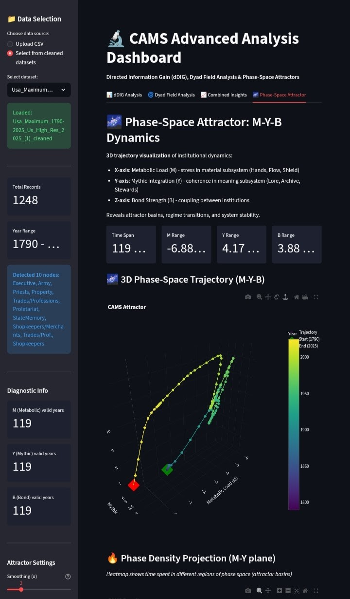

A formal specification, a failure mode taxonomy, and four new analytical tools
CAMS v2.3 is the latest version of the Complex Adaptive Model of Societies. The framework represents a society as a dynamic 8×4 state matrix, bridging the mythic layer (Lore and Archive) with executive interfaces (Helm and Stewards) through to the material foundations of Shield, Craft, Hands, and Flow. Effective coupling coordination between these three node types defines societal health.
Through precise mathematical definitions of node health, bond strengths, and coordination phase space, CAMS illuminates how societies maintain coherence or descend into crisis via layer decoupling — offering a universal lens for analysing civilisational resilience and transformation.
Complementing the formal model is a new interactive dashboard with four specialised analytical tools: dDIG Analysis, Dyad Field, Combined Insights, and Phase-Space Attractor. Open-source, intuitive, and optimised for time-series data.
Three Ontological Layers
Mythic
Lore · Archive
Cognitive coherence and legitimacy — meaning, memory, narrative continuity
Interface
Helm · Stewards
Executive conduit — governance and resource stewardship bridging myth and matter
Material
Shield · Craft · Hands · Flow
Physical and metabolic base — defence, production, labour, distribution
Concise Formal Specification
Society S at time t is the state matrix X(t) ∈ ℝ⁸ˣ⁴ — eight nodes, four columns [C, K, S, A] scored on integers [1, 10] representing Coherence, Capacity, Stress, and Abstraction.
Phase-space trajectories and coordination metrics over time — Australia, Norway, Iran. Distinct attractor basins visible in each case.
Failure Mode Taxonomy
Systemic failure equals layer decoupling. The signal is a falling Λ(t) — the mythic–material coupling index degrading before the Coordination Phase Transition arrives. Societies do not fail by single-node collapse but by severed bonds between layers.
Chaotic Fragmentation
Material layer runs without mythic coherence. low Λ, Material ↑, Mythic ↓
Example: 1891 Chilean Civil War.
Regime Rigidity
Mythic layer captures Helm and freezes Material adaptation. Mythic high, Material stagnant
Helm Isolation
Executive fragmentation or capture. V₁ ↓, β₁ ↓
Mythic Decoupling
Narrative–material gap: meaning continues while capacity collapses. Mythic high, Material collapse
Flow Collapse
Supply or currency failure cascades to Hands, Craft, and Shield. Flow V ↓ → cascade
Late Abstraction Collapse
Abstraction drops after prolonged stress accumulation. A_i ↓ after S_i ↑ sustained
Archive Amnesia
Memory collapse leading to policy incoherence and narrative drift. Archive C ↓, σ_V ↑
The Dashboard
Live at:cams-advanced-analysis.streamlit.app
Four specialised tools · 50+ pre-loaded societies · Upload CSV for custom data
Expected format: Society, Year, Node, Coherence, Capacity, Stress, Abstraction, Bond Strength
Tab 1 · dDIG Analysis
Directed Information Gain
Computes I(X→Y|Z): how much one institutional node predicts changes in system-wide metrics. Ranks institutions by causal influence on Coherence, Capacity, Stress, or Abstraction. Normalised nDIG scores enable cross-society comparison.
Tab 2 · Dyad Field
Metabolic–Mythic Tension
Tracks M (Metabolic Load), Y (Mythic Integration), D (Mismatch), R (Risk = D/B), and Ω (stress volatility). M–Y phase-space trajectory shows whether the system is converging or diverging. High D with weak coupling signals instability.
Tab 3 · Combined Insights
Unified Influence Rankings
Cognitive influence (nDIG for Coherence, Capacity, Abstraction), affective influence (nDIG for Stress), and composite rankings. Heatmap and radar charts for top-5 influencers. One click for a complete institutional importance profile.
Tab 4 · Phase-Space Attractor
3D System Trajectory
3D attractor plots in M–Y–B space. Regime detection via K-means clustering. Phase velocity measures speed of institutional change. Tight spirals = stability. Linear paths = directional change. Jumps = shocks or crises.

Dashboard Phase-Space Attractor tab: USA Maximum dataset, 1790–2025, 1248 records, 10 nodes detected. 3D M–Y–B trajectory colour-coded by year — the trajectory's compression post-2000 is visible.
Universality & Falsification
All societies obey identical (V̄, σ_V, Λ) geometry. Crisis equals mythic–material decoupling, detectable at least five years before the Coordination Phase Transition arrives.
Falsification criteria (unchanged from v2.0):
Cross-LLM concordance r > 0.7 ·
Λ(t−5) AUC > 0.75 ·
Universal ρ(S, K) < −0.3 ·
CPT detectability ≥5 years pre-transition
What v2.3 introduces
Formal 8×4 state matrix representation with negative-domain-safe bond strength formula
Mythic–Material coupling index Λ(t) as the primary leading indicator — falling Λ precedes Crisis by up to 5 years
Coordination Phase Space formally defined with four regimes and precise CPT conditions
Eight failure modes taxonomised from macro coupling failures down to node-specific pathways
Interactive dashboard at cams-advanced-analysis.streamlit.app with dDIG, Dyad Field, Combined Insights, and Phase-Space Attractor
Open-source, 50+ pre-loaded societies, uploadable CSV — free to use and fork